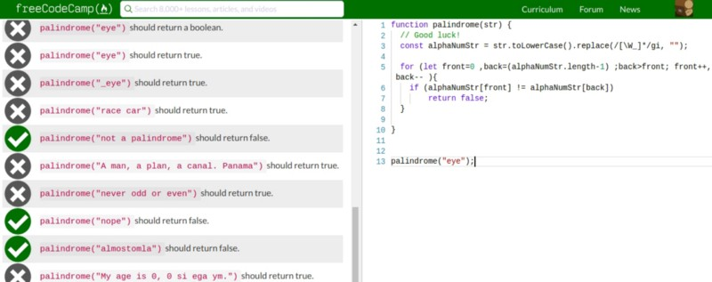
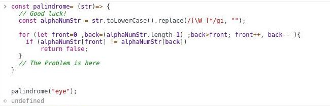
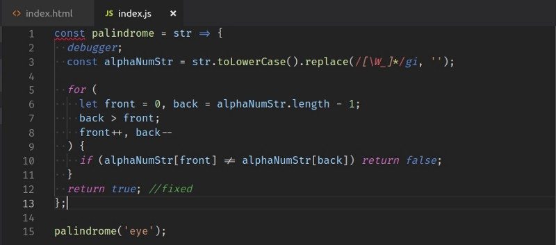

My intended audience for this tutorial is beginner programmers. You’ll learn about frustration-free debugging with chrome dev tools.
Dear Beginner, a while ago, I was where you are! After a lot of struggles, I feel like I have come far in my learning journey. I am currently in the senior phase of an immersive bootcamp where I am building full stack applications.
Every day, I learn and stumble upon so many things, which I wished I knew before. This article is an attempt to share one such idea that will make your life easier.
As you must have learned, the best way to learn programming is by doing. Now, as you start practicing coding, sometimes (or most of the times) your code will not work; in other words, there will be a BUG in your code. And you may have already tried and learned some approaches to debugging. This article is not about any one debugging approach, but rather a setup to debug your code for programming practice.
If you are practicing on an online development environment, most probably you have a setup where you have an editor, a problem and a test suite that tests your program.
You have written code, and there are some bugs, and at some point, the errors thrown up by the test suite are not really helpful.
I won’t elaborate on how tedious debugging can become here — rather let me jump straight to some tips for beginners.
The problem
As an example, I am writing a palindrome checker in FreeCodeCamp’s editor. My solution fails. In this case, we could use the test suite results to debug.
But let’s assume this test suite doesn’t give me great pointers to the exact error. (This may not be the ideal example in terms of a logical error. The point is you will come across problems where the test suite will not directly point to a logical error.)

Tip: Use the console of developer tools.
I run the same code in the console with the failing test case, and I see it returns ‘undefined’. That means the code did not return any value. I can quickly see that I forgot to return ‘true ’ if the string was found to be a palindrome.

This was a very simple error. Most of the times you would have bugs that need you to examine your variables. One approach to check variables is to console.log(variables) in the program.
However, I would suggest you use the dev tools debugger instead. In your program, you can specify the point where you want to start getting help from the debugger.

The debugger will show you all the variables in the call stack and let you step through function calls, which you will find very useful.

You will get the hang of using the debugger once you have used it a few times. Notice the arrows in the lower left box? These will let you control the program flow and show you the variables as they change.
Now let’s head for a trick.
Trick: Make a Personal Debugging Setup
As seen above, with debugger and console, we can identify the problems easily. However, if I want to run the corrected program again on the console with just one line of change, I would have to re-type it.
Even after that, I get an error:

This error is because I have used an arrow function, and cannot re-declare a const. This means that I would have to open a new tab and new console every time I change my code. Extra overhead, right?
Let's find a workaround. On your system, create a directory and cd into that directory.
Now create two files: index.js and index.html. Type the following HTML in index.html:

Now move your code from the console to index.js. Notice I have started the debugger on line 2 in the code.

Now run the index.html file in the browser. Open the developer tools or console (you may have to refresh to see the debugger). You can debug your code here.

Now every time you make a change to index.js you just hit refresh on this tab and the code reruns. No need to close and open tabs, no re-typing whole programs.
Keep the folder you just created handy. Whenever you need to try or debug a piece of code, pop that into index.js and experiment!!
Closing thoughts
If you already knew this, congratulations you wasted a valuable 4 minutes ;)
Finally, remember to err is human! Don’t worry about bugs — they will teach you the most valuable lessons of programming… and then ... Oh! the places you’ll go…
Debugging tips and tricks for JavaScript beginners
Update: 04/07/2019, 04:08 PM
Author: Mushroom Tora